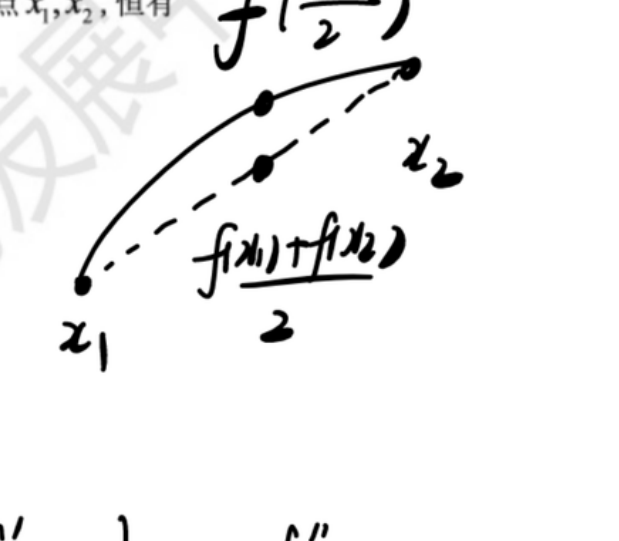
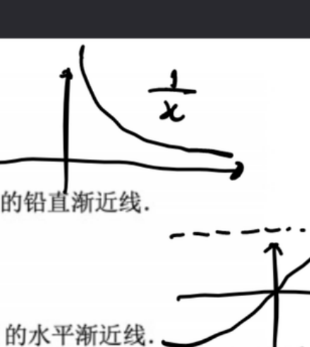
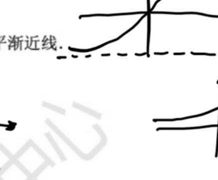
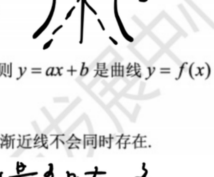
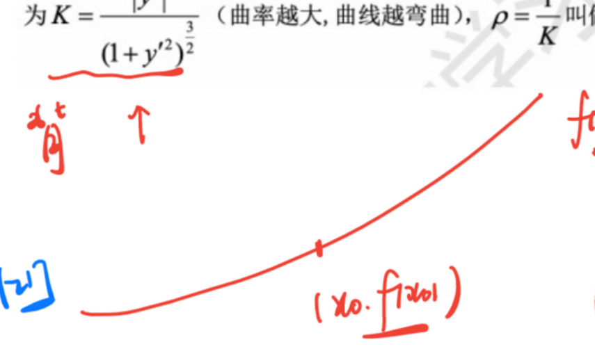
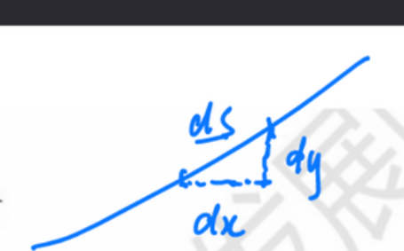

导数应用
阶段: 基础(0425) + 强化(0715) | 覆盖课件 2 份: 0425（1）、0715（1） 📖 例题全量见: 导数应用 · 例题集
板块总览
导数是函数变化的"显微镜"——它告诉你函数在每一点是上升还是下降、弯曲的方向、以及局部的极端位置。本板块是导数工具的直接落地: 用 $f'(x)$ 和 $f''(x)$ 两个信号, 把函数的几何面貌完整描画出来。
知识主线: 单调性(一阶导) → 极值与最值(一阶+二阶) → 凹凸性与拐点(二阶导变号) → 渐近线(极限+斜率) → 零点个数(单调性+极值符号) → 曲率(二阶导与几何弯曲)。
一、函数的单调性
1.1 单调性判定定理 必考
核心结论 设 $f(x)$ 在 $[a,b]$ 上连续, 在 $(a,b)$ 内可导:
- 若 $f'(x)>0$ 在 $(a,b)$ 内恒成立, 则 $f(x)$ 在 $[a,b]$ 上严格单调递增;
- 若 $f'(x)<0$ 在 $(a,b)$ 内恒成立, 则 $f(x)$ 在 $[a,b]$ 上严格单调递减。
直觉 $f'(x)$ 是每一点的瞬时变化率(切线斜率)。斜率为正 = 往上走; 斜率为负 = 往下走。把区间内每点的"走向"连起来, 就是单调性。
为什么导数变号的地方是关键? 重点 $$ f'(x) \text{ 的正负分界点} = \text{函数走势的转折点(极值候选)} $$ 这直接引出极值第一充分条件(下面第二节)。
1.2 求单调区间的标准步骤 高频
- 确定 $f(x)$ 的定义域
- 求 $f'(x)$, 解方程 $f'(x)=0$ 及找出 $f'(x)$ 不存在的点
- 以这些点为界划分区间, 在每个子区间内取测试点判断 $f'(x)$ 的符号
- 列表: 区间 + $f'$ 符号 + $f$ 单调性
易错点 易错 漏掉 $f'(x)$ 不存在的点(不可导点)。不可导点也是单调性可能改变的位置, 如 $f(x)=|x|$ 在 $x=0$ 不可导但单调性在此改变(左减右增)。
例 1.1 求 $f(x)=x^3-\frac{9}{2}x^2+6x$ 的单调区间与极值。 【0425（1）】【AI补全】
- $f'(x)=3x^2-9x+6=3(x-1)(x-2)$
- $(-\infty,1)$: $f'>0$, 递增; $(1,2)$: $f'<0$, 递减; $(2,+\infty)$: $f'>0$, 递增
- $x=1$ 取得极大值, $x=2$ 取得极小值
解答过程
二、函数的极值与最值
2.1 极值的定义
设 $f(x)$ 在 $x_0$ 的某邻域 $U(x_0)$ 内有定义。若对于去心邻域 $\mathring{U}(x_0)$ 内的任一 $x$:
- 有 $f(x)<f(x_0)$, 则 $f(x_0)$ 为极大值, $x_0$ 为极大值点;
- 有 $f(x)>f(x_0)$, 则 $f(x_0)$ 为极小值, $x_0$ 为极小值点。
直觉 极值 = 局部最高点或最低点。站在山顶($x_0$), 周围全都比你矮 → 极大值; 站在谷底, 周围全都比你高 → 极小值。极值是局部概念, 不一定是全局最大/最小。
关键词: "某邻域" —— 只管附近, 不管远方。
易错 极值不要求定义域两侧都有定义: $f$ 在 $(0,1)\cup(1,+\infty)$ 单调递减时, $f(1)$ 仍可以是极大值——定义域挖掉 $x=1$, 去心邻域内全部比它小。判断极值只看"去心邻域内的比较", 不看出生证。
2.2 极值存在的必要条件(可导情形) 必考
核心结论 设 $f(x)$ 在 $x_0$ 处可导, 且 $x=x_0$ 为 $f(x)$ 的一个极值点, 则 $$ f'(x_0)=0 $$
我们称满足 $f'(x_0)=0$ 的点 $x=x_0$ 为驻点(或稳定点)。
重要否定 易错
- 驻点 不一定 是极值点(反例: $f(x)=x^3$ 在 $x=0$, $f'(0)=0$ 但 $(0,0)$ 是拐点不是极值点);
- 极值点 不一定 是驻点(不可导点也可能是极值点, 如 $f(x)=|x|$ 在 $x=0$)。
直觉 在光滑的峰顶或谷底, 切线必须是水平的(斜率为 0)。但水平切线不保证一定是峰/谷——可能是"平台"或鞍点。
2.3 极值存在的第一充分条件(导数变号法) 必考
核心结论 设 $f(x)$ 在 $x_0$ 处连续, 且在 $x_0$ 的去心邻域内可导:
| $x<x_0$ 时 $f'(x)$ 符号 | $x>x_0$ 时 $f'(x)$ 符号 | 结论 |
|---|---|---|
| $+$ | $-$ | $f(x_0)$ 为极大值 |
| $-$ | $+$ | $f(x_0)$ 为极小值 |
| 不变号 | 不变号 | $f(x_0)$ 不是极值 |
直觉: 先上后下 = 山顶(极大); 先下后上 = 谷底(极小); 一直上或一直下 = 路过, 不是极值。
优点: 不需要 $f(x_0)$ 可导, 只需要 $x_0$ 附近可导 + $f$ 在 $x_0$ 连续。对不可导点照样有效。
例 2.1 求 $y=x\cdot 2^x$ 的极值。 【0425（1）例3.12】
- $y'=2^x(1+x\ln2)$, 驻点 $x=-\frac{1}{\ln2}$
解答过程
2.4 极值存在的第二充分条件(二阶导判别) 高频
核心结论 设 $f(x)$ 在 $x_0$ 处有二阶导数, 且 $f'(x_0)=0$, $f''(x_0)\neq 0$, 则:
- $f''(x_0)<0$ $\Rightarrow$ $f(x_0)$ 为极大值, $x=x_0$ 为极大值点;
- $f''(x_0)>0$ $\Rightarrow$ $f(x_0)$ 为极小值, $x=x_0$ 为极小值点。
直觉 一阶导为零 = 切线水平; 二阶导为负 = 切线斜率在"下降" → 切线从正变成负 → 先上后下 → 山顶; 二阶导为正 = 切线斜率在"上升" → 切线从负变成正 → 先下后上 → 谷底。
核心 $f''$ 判定极值的本质是第一充分条件的浓缩版 —— 用 $f''$ 的符号直接看出 $f'$ 的变号方向。
注意 注意 当 $f''(x_0)=0$ 时, 第二充分条件失效, 需退回第一充分条件(看 $f'$ 是否变号)。典型例子: $f(x)=x^4$ 在 $x=0$, $f'(0)=0$, $f''(0)=0$, 但 $f(x)\ge f(0)$, 是极小值(第一充分条件: $x<0$ 时 $f'<0$, $x>0$ 时 $f'>0$)。
2.5 不可导点与极值 易错
极值点可能出现在:
- 驻点 ($f'(x)=0$)
- 不可导点 ($f'(x)$ 不存在)
判别不可导点是否为极值: 必须用第一充分条件(看 $f'$ 是否在两侧变号), 第二充分条件不适用(因为不可导)。
2.6 闭区间上连续函数的最值 必考
核心结论 闭区间 $[a,b]$ 上的连续函数 $f(x)$ 必有最大值和最小值(最值定理)。
求最值步骤:
- 求出 $f(x)$ 在 $(a,b)$ 内的所有驻点和不可导点
- 计算 $f(x)$ 在上述点处的函数值, 以及端点值 $f(a)$ 和 $f(b)$
- 比较所有值: 最大者为最大值, 最小者为最小值
直觉 最值出现在"可能的位置" = 端点 + 内部峰谷。把所有候选点的函数值列出比较即可, 不需要逐一判断哪些是极值。
易错点 易错 开区间上不一定有最值; 闭区间上连续函数必然有最值, 但端点也必须参与比较。
三、曲线的凹凸性与拐点
3.1 凹凸性的定义 重点

课件原图展开
核心结论 设 $f(x)$ 在区间 $I$ 上连续。若对 $I$ 上任意不同的两点 $x_1,x_2$, 恒有:
- 凹(上凹/下凸): $f\!\left(\frac{x_1+x_2}{2}\right) < \frac{f(x_1)+f(x_2)}{2}$ — 中点函数值小于弦中点
- 凸(下凹/上凸): $f\!\left(\frac{x_1+x_2}{2}\right) > \frac{f(x_1)+f(x_2)}{2}$ — 中点函数值大于弦中点
直觉 凹 = 函数图像在线段下方(像碗, 可以盛水) → 开口向上; 凸 = 函数图像在线段上方(像倒扣的碗, 盛不了水) → 开口向下。
记忆法: 凹函数 $f''>0$, 切线在曲线下方; 凸函数 $f''<0$, 切线在曲线上方。
注意: 不同教材对"凹凸"的命名恰好相反。本笔记遵循同济教材: 凹 = $f''>0$ = 开口向上 = 上凹, 凸 = $f''<0$ = 开口向下 = 上凸。考试时看准题目用语, 以 $f''$ 符号为准最安全: $f''>0$ → 曲线"往上弯"。
3.2 凹凸性的判别法 必考
核心结论 设 $f(x)$ 在 $[a,b]$ 上连续, 在 $(a,b)$ 内有二阶导数:
- 若 $f''(x)>0$ 在 $(a,b)$ 内恒成立, 则 $f(x)$ 在 $[a,b]$ 上的图形是凹的;
- 若 $f''(x)<0$ 在 $(a,b)$ 内恒成立, 则 $f(x)$ 在 $[a,b]$ 上的图形是凸的。
直觉: $f''>0$ 意味着 $f'$ 在递增 → 斜率越来越大 → 曲线越走越陡(往上弯); $f''<0$ 意味着 $f'$ 在递减 → 斜率越来越小 → 曲线逐渐变平或向下弯。以 $y=x^2$ 为例: $y''=2>0$, 整条曲线凹(碗形)。
求凹凸区间的步骤: 与单调性步骤完全平行, 只是把 $f'$ 换 $f''$:
- 求 $f''(x)$, 解 $f''(x)=0$ 及 $f''(x)$ 不存在的点
- 划分区间, 在各子区间判 $f''$ 符号
3.3 拐点 必考
定义 连续曲线 $y=f(x)$ 上凹凸性发生改变的分界点 $(x_0, f(x_0))$ 称为曲线的拐点(或反曲点)。
拐点的必要条件: 若 $(x_0, f(x_0))$ 为拐点且 $f''(x_0)$ 存在, 则 $f''(x_0)=0$。
拐点的充分条件:
- 第二充分条件: 若 $f''(x_0)=0$ 且 $f'''(x_0)\neq 0$, 则 $(x_0, f(x_0))$ 为拐点;
- 最可靠的方法: $f''(x)$ 在 $x_0$ 两侧异号。
直觉 拐点 = 曲线从"往上弯"变成"往下弯"(或反过来)的位置。想像驾车: 左转弯后紧接着右转弯, 中间那个"方向盘回正"的瞬间就是拐点。
易错点 易错 $f''(x_0)=0$ 是拐点的必要非充分条件(类似 $f'(x_0)=0$ 不是极值的充分条件)。反例: $f(x)=x^4$, $f''(0)=0$ 但 $(0,0)$ 不是拐点($f''=12x^2\ge0$, 全程凹, 拐点只出现在 $f''$ 变号处)。
例 3.1 设 $f(x)=[x(1-x)]^3$, 判断 $x=0$ 处的极值性与拐点。 【0425（1）例3.18】
解答过程
四、渐近线
4.1 三种渐近线的定义与求法 必考

课件原图展开

课件原图展开

课件原图展开
课件原图展开
渐近线是函数曲线在"无穷远处"趋近的直线。有三种类型:
| 类型 | 条件 | 方程 |
|---|---|---|
| 铅直(垂直) | $\displaystyle\lim_{x\to a}f(x)=\infty$ (或单侧) | $x=a$ |
| 水平 | $\displaystyle\lim_{x\to\infty}f(x)=b$ (或 $x\to+\infty$/$x\to-\infty$) | $y=b$ |
| 斜 | $\displaystyle\lim_{x\to\infty}\frac{f(x)}{x}=a\ (a\neq0)$, $\displaystyle\lim_{x\to\infty}[f(x)-ax]=b$ | $y=ax+b$ |
直觉
- 铅直: 函数在某处"爆炸"(分母为零、对数趋于负无穷等)
- 水平: 函数在无穷远处"趋于常数"(趋于水平线)
- 斜: 函数在无穷远处"像一条斜线一样走"(一次函数主导)
4.2 求渐近线的标准流程 高频
- 铅直: 找函数无定义的点 + 分段边界点。计算该点的左/右极限, 只要有一侧 $\to\infty$ 即得铅直渐近线。
- 水平与斜: 分 $x\to+\infty$ 和 $x\to-\infty$ 分别讨论:
- 先算 $k=\lim\frac{f(x)}{x}$:
- 若 $k=0$: 继续算 $b=\lim f(x)$, 若存在则为水平渐近线 $y=b$
- 若 $k\neq0$ 且有限: 算 $b=\lim[f(x)-kx]$, 若存在则为斜渐近线 $y=kx+b$
- 若 $k=\infty$: 无水平也无斜渐近线
重要结论 重点 在同一变化过程(同侧无穷)中, 水平渐近线与斜渐近线不会同时存在。因为水平是 $k=0$ 的特例, 斜要求 $k\neq0$。同一侧最多一条(要么水平、要么斜、要么都没有)。
4.3 典型例题
例 4.1 求曲线 $y=\frac{1}{x}+\ln(1+e^x)$ 的渐近线。 【0425（1）例3.19】
解答过程
五、零点个数与参数范围 高频
5.1 核心方法: 单调性 + 极值符号判零点
基本逻辑: 零点个数 = 函数图像与 $x$ 轴的交点个数。判断步骤:
- 求 $f'(x)$, 确定单调区间和各段极值
- 在每个单调区间上: 若两端函数值(或极限)异号, 则恰有一个零点; 同号则无零点
- 极值点为 0 的情况单独讨论(零点也是极值点)
常见题型: 方程 $f(x)=k$ 有实根 → 转化为 $g(x)=f(x)-k$ 的零点问题, 或直接求 $f(x)$ 的值域。
5.2 典型例题
例 5.1 已知方程 $\frac{x}{\ln(1+x)}=k$ 在 $(0,1)$ 内有实根, 求常数 $k$ 的取值范围。 【0715（1）例3.17】
解答过程
例 5.2 设 $f(x)=ax-b\ln x\ (a>0)$ 有两个零点, 求 $\frac{b}{a}$ 的取值范围。 【0715（1）例3.18】
解答过程
六、曲率与曲率圆 高频
6.1 曲率公式

课件原图展开

课件原图展开
核心结论 曲线 $y=f(x)$ 在点 $(x,f(x))$ 处的曲率(弯曲程度): $$ K = \frac{|y''|}{(1+(y')^2)^{3/2}} $$
直觉 曲率 = 曲线在该点的"瞬时弯曲程度"。分子 $|y''|$ 越大(二阶导越大 → 弯曲越厉害), 分母 $(1+(y')^2)^{3/2}$ 修正了斜率的影响(斜率很大时同样的 $y''$ 对应的实际弯曲较小)。
特例: 直线的 $y''=0$, 曲率为 0; 半径为 $R$ 的圆: $K=\frac{1}{R}$。
6.2 曲率圆(密切圆)
定义 在曲线 $y=f(x)$ 上某点 $P$ 处, 与曲线有相同切线、相同曲率、且凹向一致的圆, 称为曲线在该点的曲率圆(或密切圆)。曲率圆的半径 $R=\frac{1}{K}$ 称为曲率半径。
曲率圆的性质:
- 圆心在曲线的法线上(凹的一侧)
- 与曲线在 $P$ 点有二阶接触(函数值、一阶导、二阶导均相等)
例 6.1 若 $f''(x)$ 不变号, 且曲线 $y=f(x)$ 在点 $(1,1)$ 处的曲率圆为 $x^2+y^2=2$, 判断 $f(x)$ 在区间 $(1,2)$ 内的情况。 【0715（1）例3.21】
解答过程
七、最值应用题(数三经济应用) 高频
数三独有考点: 把"求最值"翻译成经济语言。边际分析/弹性分析的完整理论见数三专题板块, 本节讲应用题的解题骨架。
标准流程: ① 建函数(利润 = 收入 − 成本, 收入 = 价格 × 销量) → ② 求导找驻点 → ③ 二阶导/端点验证极大 → ④ 回代求定价/产量。
典型模型: 固定成本 $C_0$、单位可变成本 $c$, 价格函数 $p=p(Q)$(价格随销量降), 则 $$ L(Q)=Q\cdot p(Q)-(C_0+cQ),\qquad L'(Q)=0 \iff MR=MC $$
经济意义作答模板: "当价格为 $p_0$(销量 $Q_0$)时, 销量每增加 1 件, 利润约增加/减少 $|L'(Q_0)|$ 元"——边际利润的叙述必须带"约"字(导数是近似值)。
例(0418 系/一元函数微分学 例3.22 型): 固定成本 60000 元, 可变 20 元/件, $p=60-\frac Q{1000}$, 产销平衡。求: (1) 边际利润; (2) $p=50$ 时边际利润及经济意义; (3) 利润最大的定价。
- ① $L(Q)=(60-\frac Q{1000})Q-(60000+20Q)=40Q-\frac{Q^2}{1000}-60000$, $ML=L'(Q)=40-\frac Q{500}$;
- ② $p=50\Rightarrow Q=10000$, $ML=40-20=20$ 元/件——"再卖一件约多赚 20 元";
- ③ $L'(Q)=0\Rightarrow Q=20000$, $p=60-20=40$ 元; $L''=-\frac1{500}<0$ 确为最大。 (完整解答见数三专题板块 3.1)
直觉 经济最值题不考高深数学, 考"翻译": 把价格函数、成本函数翻译成利润函数, 剩下就是普通求最值。
八、易错点与考法总结
7.1 高频易错点
| 易错点 | 正确理解 |
|---|---|
| 易错 驻点 = 极值点 | 驻点是 $f'=0$ 的点; 极值点需要 $f'$ 变号。$y=x^3$ 在 $x=0$ 是驻点但非极值点 |
| 易错 极值点必可导 | $y=\|x\|$ 在 $x=0$ 取极小值但不可导。不可导点也是极值候选 |
| 易错 $f''(x_0)=0$ → 拐点 | 必须 $f''$ 在 $x_0$ 两侧变号。$y=x^4$: $f''(0)=0$ 但始终 $f''\ge0$, 无拐点 |
| 易错 $f''(x_0)>0$ → 极小值(未检验 $f'(x_0)=0$!) | 第二充分条件的前提是驻点($f'(x_0)=0$)。若 $f'(x_0)\neq0$, $f''$ 的符号与极值无关 |
| 易错 同侧既有水平又有斜渐近线 | 同一无穷方向最多一条(水平是斜的特殊情况 $k=0$, 二者互斥) |
| 易错 铅直渐近线只看分母零点 | 还要看分子是否同时为零(可能是可去间断)。必须算极限确认是否为 $\infty$ |
| 易错 最值只比较内部驻点 | 端点 $f(a), f(b)$ 也必须参与比较 |
7.2 考法视角
- 直接求单调区间/极值/凹凸/拐点: 送分题, 按流程计算即可
- 导函数图形判断原函数性质: 给 $f'(x)$ 图像, 问 $f(x)$ 的极值点/拐点个数。看 $f'$ 的零点 + 变号 → 极值点; 看 $f'$ 的极值点(即 $f''$ 零点) + 变号 → 拐点
- 隐函数/参数方程的极值: 需要隐函数求导 (如例 3.15)
- 极限条件判极值: 题干给 $\lim\frac{f(x)}{x^n}$ 型极限条件, 需要反推 $f(0), f'(0)$ 等信息 (如例 3.16、例 3.20)
- 渐近线综合: 含 $\ln$, $e^x$, 分式, 需要收敛到分 $x\to+\infty$ / $x\to-\infty$ 分别讨论
- 零点与参数: 用单调性 + 极值符号建立不等式, 核心是求函数值域
- 曲率: 多与其他概念结合(拐点、极值), 计算量小, 概念性强
知识连接
- 导数 → 单调性: $f'>0$ = 递增; $f'<0$ = 递减。这是导数最直接的几何应用。
- 单调性 + 连续 → 零点定理: 单调区间上两端异号 ⇒ 恰有一个零点。这是证明方程根的存在性与唯一性的标准模式。
- $f''$ → 凹凸性 → 拐点: $f''$ 是 $f'$ 的导数, 所以 $f$ 的拐点 = $f'$ 的极值点。
- 极值 → 最值: 在闭区间上, 最值在极值点/不可导点/端点三者中比较得出。
- 渐近线 → 极限: 渐近线的计算本质是求极限, 铅直看间断点, 水平/斜看无穷远。
- 曲率 → 物理: 曲率对应运动轨迹的向心加速度, 曲率半径对应密切圆半径。
- 不等式证明 的部分(单调性证明不等式、中值定理证明不等式) 已归入 中值定理板块, 本板块不做重复。但单调性判断最值、极值符号判零点等思路在不等式证明中同样是基础工具。
- 驻点与费马引理: $f$ 在极值点可导 ⇒ $f'=0$。这是罗尔定理的出发点, 连接中值定理板块。
【来源: 0425（1）、0715（1）】